Durability is a chain, not a number.
We study non-lithium batteries where they actually fail — at the solvation shell, through transport, and at the interface. Ionic conductivity does not predict lifetime. The causal chain does.
Coordination
What sits in the first solvation shell of the working ion, and how much free solvent is left over to react.
Transport
Transference number and conductivity against temperature — the properties everyone reports, and the ones that mislead on their own.
Interface
Time-resolved interfacial resistance, fracture energy, stack-pressure sensitivity. Where the cell actually ends its life.
The work, as the journals drew it
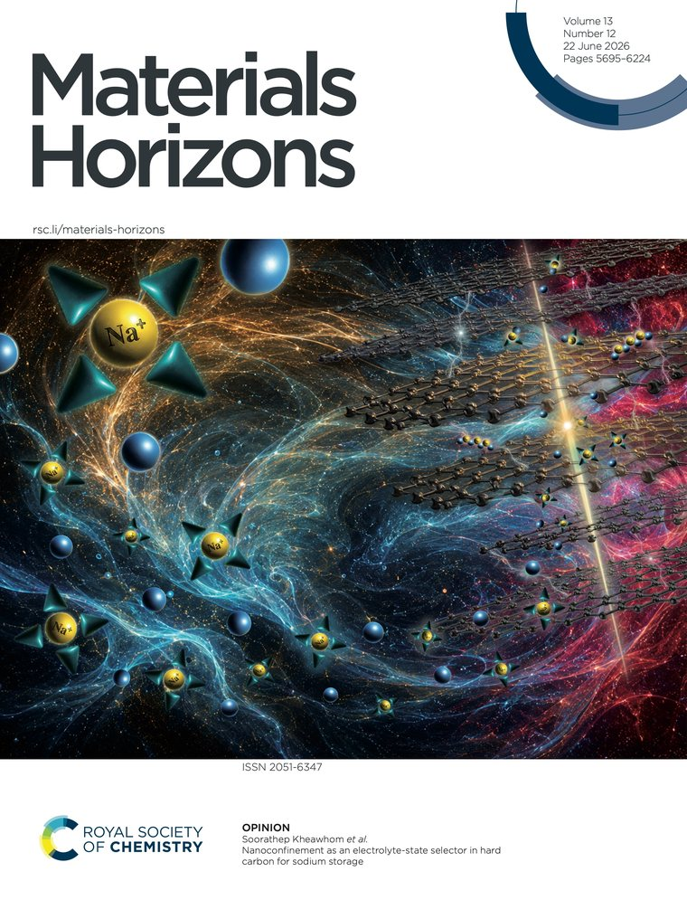
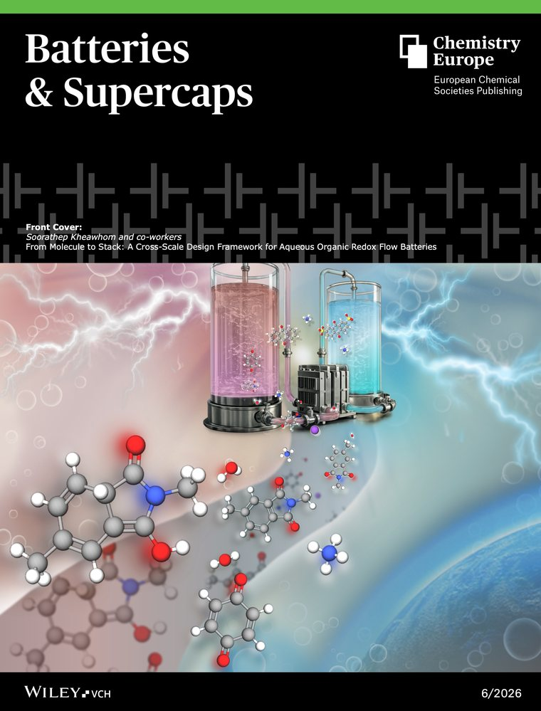
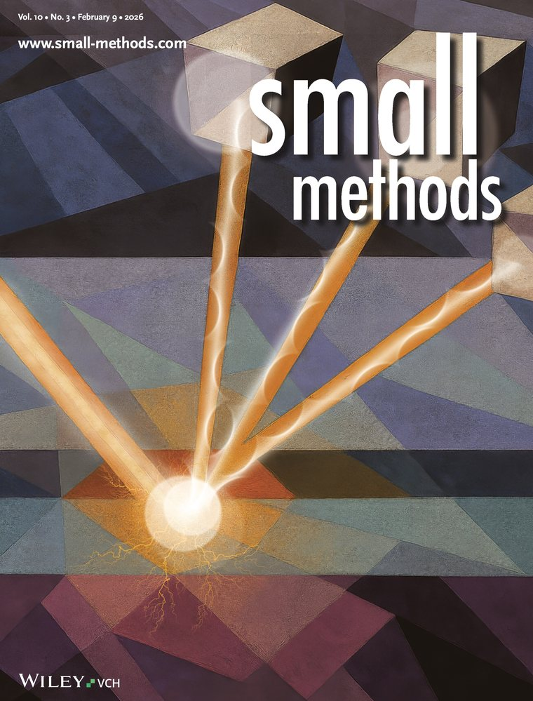
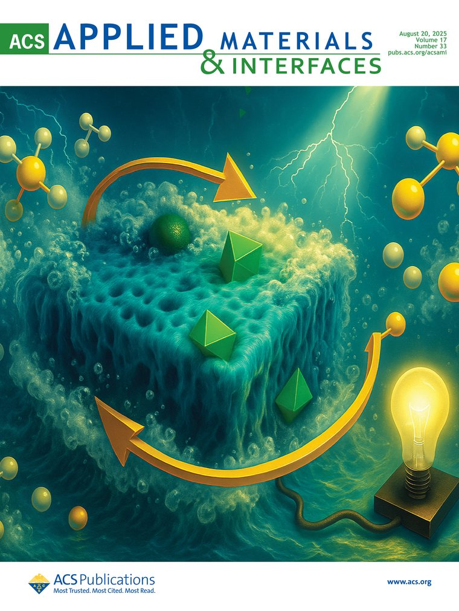
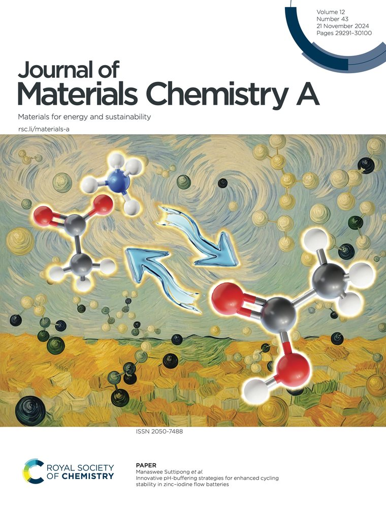
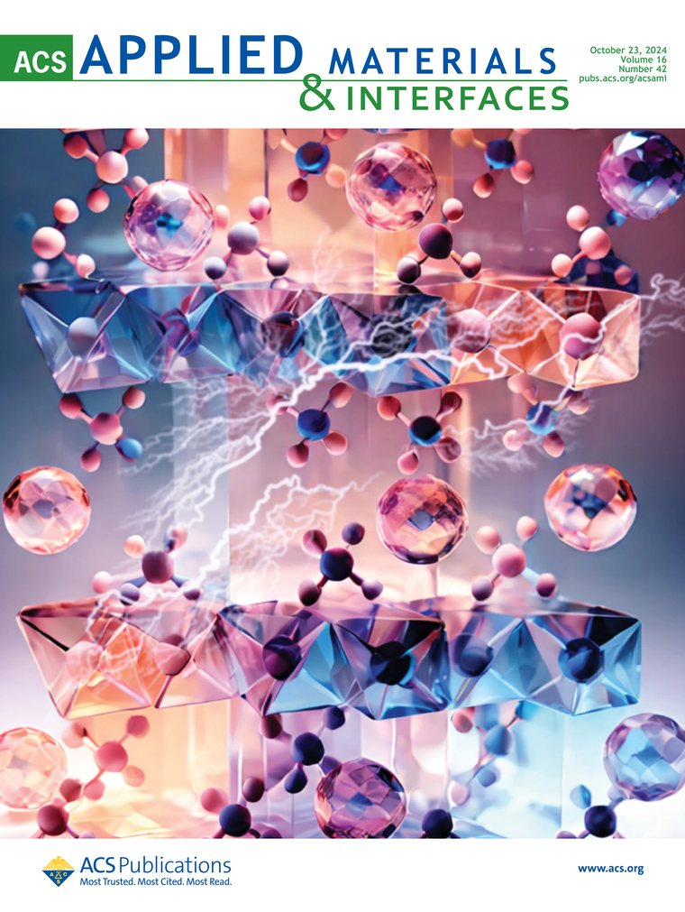
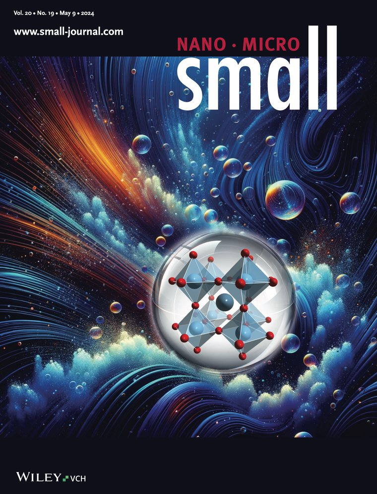
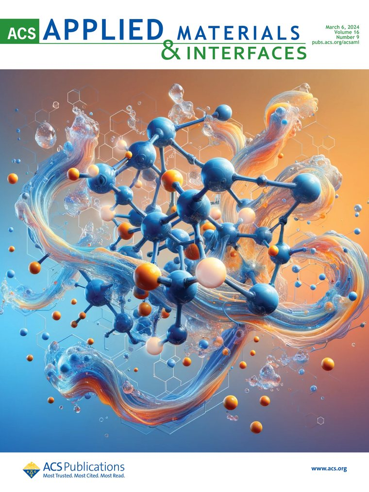
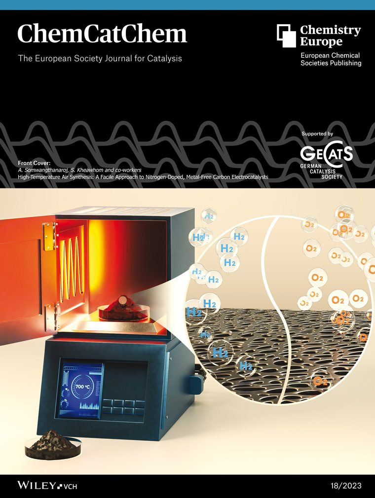
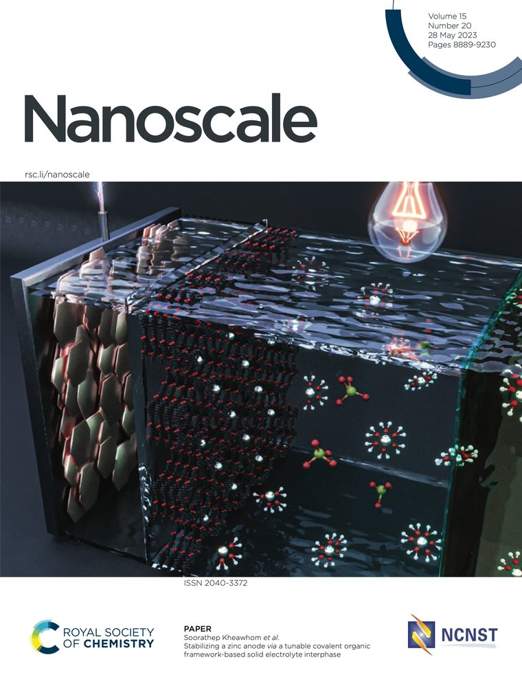
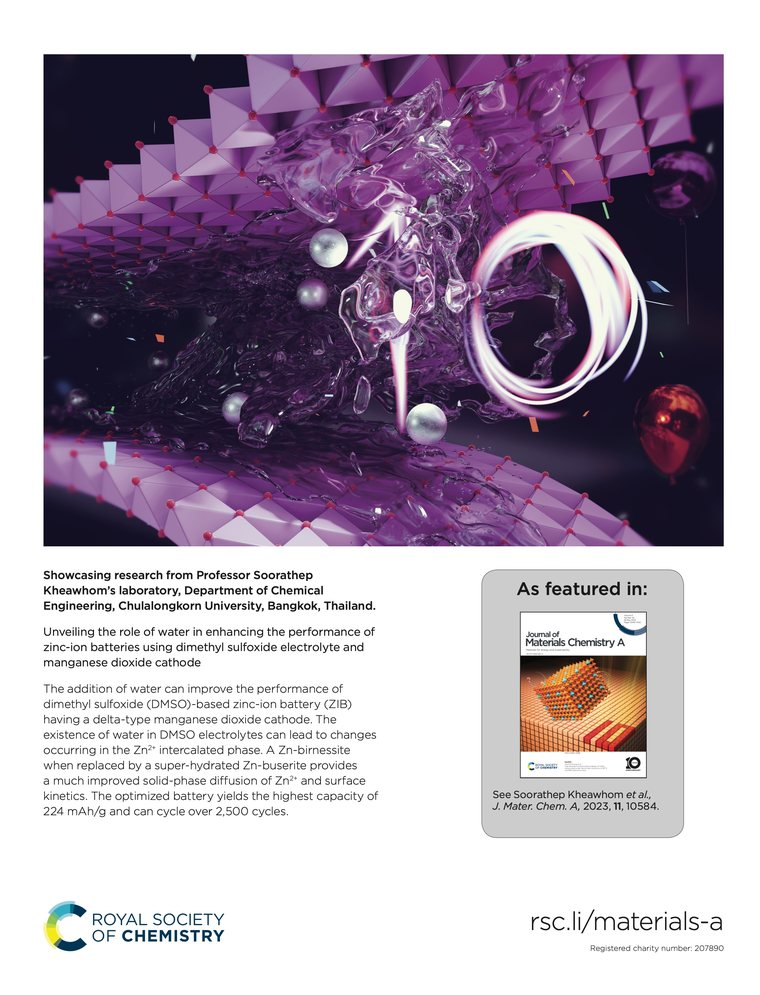
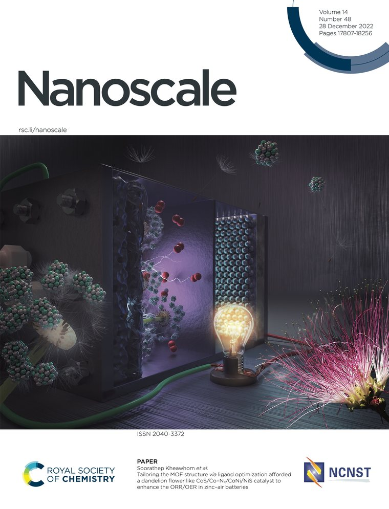
Why ionic conductivity does not predict durability
Six design rules, a minimal descriptor set, and a failure-mode decision logic for sodium batteries across liquid and solid electrolytes. Under a matched stack-pressure baseline, the usual sulfide-over-oxide ranking can invert — part of the sulfide advantage is pressure-assisted contact, not intrinsic transport.
Founding Chair, ECS Thailand Section
Chartered by the Board of Directors of The Electrochemical Society on 30 May 2024 with 27 members. The only ECS-designated entity supporting electrochemical professionals and students in Thailand.
Organizing Chair, 19th Asian Conference on Solid State Ionics (ACSSI-19), Chulalongkorn University.
Non-lithium chemistries, read through coordination, transport, and interface
Lithium is not the only way to store an electron, and in grid-scale and safety-critical settings it is often not the best one. Our work concentrates on the chemistries that are abundant, aqueous-compatible, and unfashionable enough to still have physics left in them.
Zinc batteries
Zinc-air, zinc-ion, zinc-iodine, and zinc-bromine systems. Anode stability and dendrite suppression, artificial solid-electrolyte interphases from covalent organic frameworks and carboxymethyl cellulose, electrolyte and additive engineering.
Sodium batteries
Layered oxide and polyanionic cathodes, tunnel-type Na0.44MnO2, and the comparison of liquid against solid electrolytes under matched reporting conditions.
Flow batteries
Zinc, iodine, bromine, and organic redox chemistries for large-scale renewable energy storage. The largest flow battery research program in Thailand, built on a 45 MTHB national grant.
Magnesium and multivalent systems
Divalent carriers where the coordination penalty is severe and the interface, not the bulk, sets the achievable rate.
Manganese-based cathodes
Intergrowth and polymorph-controlled manganese dioxides, MnO/NC/MXene heterostructures, and the dissolution–redeposition mechanisms that govern their fade.
Electrocatalysis
Oxygen reduction and evolution catalysts and processes for bifunctional air electrodes, plus electroreforming routes to hydrogen and green chemicals from biomass.
Operando characterization
A post-mortem tells you what broke. It does not tell you when, or in what order. We run X-ray absorption spectroscopy, grazing-incidence XAS, and X-ray diffraction on cells while they cycle, because the interface only reveals its failure sequence while it is still failing.
The Coordination–Transport–Interface framework
CTI is the lab's organizing claim: that battery durability is produced by a causal chain running from the first solvation shell, through bulk transport, to interfacial evolution — and that measuring only the middle link explains why the field keeps being surprised by cells that conduct well and die early.
What the ion is wearing
First-shell anion fraction. Coordination number. Free-solvent activity. These set what can decompose and what cannot.
How fast it moves
Transference number. Conductivity against temperature. Necessary, widely reported, and insufficient on its own.
Where it ends
Time-resolved interfacial resistance. Interfacial fracture energy. Stack-pressure sensitivity. The link that decides lifetime.
What the framework produces
Six design rules
Stated as falsifiable conditions rather than heuristics, each tied to a measurable descriptor.
A minimal descriptor set
The smallest set of measurements that lets two electrolytes be compared honestly across classes.
Failure-mode decision logic
From observed failure mode to the mitigation that addresses its cause, not its symptom.
A minimum reporting set
Stack pressure and areal capacity disclosed as a condition of comparison, not an appendix.
The claim that costs us something
A framework that only reorganizes the literature is a taxonomy. CTI is worth defending because it changes a verdict.
Under a matched stack-pressure baseline, sulfide-over-oxide can invert
Part of the reported sulfide electrolyte advantage is pressure-assisted contact rather than intrinsic transport. Disclose stack pressure and areal capacity, and the standard ranking of sulfide against NASICON-type oxide does not survive in every case. This is a prediction, and it can be shown wrong.
Instruments and beamlines
In the laboratory
| Electrochemistry Biologic (×3), Squidstat (×3), VersaSTAT (×2) potentiostats |
| Battery testing Multi-channel battery testers for galvanostatic cycling, rate capability, and long-term cycle life |
| Controlled atmosphere Argon glovebox for moisture- and oxygen-sensitive handling and cell assembly |
| Structure X-ray diffraction; Raman spectroscopy; digital microscopy |
| Synthesis Tube furnace; muffle furnace; oil baths (×3) |
| Fabrication Doctor blade coater; coin and pouch cell assembly |
| Optical UV-Vis spectroscopy |
Synchrotron access
| Facility | Country |
|---|---|
| SLRI — Synchrotron Light Research Institute | Thailand |
| SOLEIL | France |
| KEK Photon Factory | Japan |
| NSRRC | Taiwan |
Booking and code
Book an instrument
Every shared instrument is booked through one calendar: the eight potentiostats, the battery testers, XRD, Raman, UV-Vis, the furnaces, the oil baths, the coater, the microscope, and the argon glovebox. Check the calendar before you run. Long cycling tests are booked as a range, not a slot.
Group repositories
Analysis scripts, fitting routines, and notebooks live under version control, not in personal drives. A figure in a paper should trace back to the commit that produced it.
Principal Investigator
Soorathep Kheawhom
Associate Professor, Department of Chemical Engineering, Faculty of Engineering, Chulalongkorn University
Trained as a process systems engineer and spent a decade on robust model predictive control and multi-objective process design before moving to electrochemical energy storage in 2016. That background is why this group treats a battery as a system with a failure sequence rather than a material with a number attached to it.
Where our people went
Former group members hold positions at Shinshu University, Kyushu University, Mahidol University, Thammasat University, Alliance University in India, Cellforce Group (Porsche AG) in Germany, and within Chulalongkorn University.
Doctoral graduates
| Year | Name | Thesis | Now |
|---|---|---|---|
| 2025 | Dr. Getu Kassegn Weldegebrieal | Stabilizing tunnel-type Na0.44MnO2 cathodes through electrolyte and cathode engineering for sodium-ion batteries | — |
| 2024 | Dr. Abdulkadeem Sanni | Aluminium-doped, carbon-supported zinc oxide ternary composite electrodes for supercapacitors | Shinshu University, Japan |
| 2023 | Dr. Vipada Aupama | Covalent organic frameworks from aldehyde and amine linkers as artificial SEI for zinc anodes | — |
| 2023 | Dr. Phonnapha Tangthuam | Carboxymethyl cellulose as artificial SEI and separator for Zn-based batteries | — |
| 2021 | Dr. Wathanyu Kao-ian | Development of a nonaqueous zinc-ion battery based on a manganese dioxide cathode | — |
| 2020 | Dr. Woranunt Laoatiman | Modeling of zinc-air batteries using theoretical and empirical approaches | — |
| 2020 | Dr. Sonti Khamsanga | MnO2/carbon cathodes for rechargeable aqueous zinc-ion batteries | — |
| 2012 | Dr. Pornchai Bumroongsri | Robust constrained model predictive control with applications to chemical processes | Mahidol University, Thailand |
Postdoctoral alumni
| Period | Name | Now |
|---|---|---|
| 2018–2020 | Dr. Ali Abbasi | Cellforce Group GmbH (Porsche AG), Germany |
| 2019–2025 | Dr. Ramin Khezri | MMRI, Chulalongkorn University, Thailand |
| 2019–2026 | Dr. Mohammad Etesami | Kyushu University, Japan |
| 2022–2024 | Dr. Shiva Rezaei Motlagh | Chulalongkorn University, Thailand |
| 2022–2025 | Dr. Durai Govindarajan | Alliance University, Bangalore, India |
| 2023–2025 | Dr. Kulandaivel Thirumoorthy | PPC, Chulalongkorn University, Thailand |
| 2023–2025 | Dr. Sagar Ingavale | Thammasat University, Thailand |
| 2020–2026 | Dr. Mohan Gopalakrishnan | — |
| 2022–2026 | Dr. Wathanyu Kao-ian | — |
| 2024–2026 | Dr. Vipada Aupama | — |
| 2024–2026 | Dr. Phonnapha Tangthuam | — |
322 publications · 6,779 citations · h-index 47
The complete record is maintained on Scopus and ORCID rather than duplicated here, because a hand-copied list on a lab site is out of date the week it is published. Below is a selection from 2024 to 2026, grouped by where each paper sits in the causal chain.
Featured
Why ionic conductivity does not predict durability: Coordination–Transport–Interface design rules for sodium batteries across liquid and solid electrolytes
Weldegebrieal G.K., Tangthuam P., Choi M.Y., Lin J., Yonezawa T., Praserthdam S., Kheawhom S. — Journal of Materials Chemistry A. DOI 10.1039/D6TA01969B
Selected publications, 2024–2026
Selected, not complete. Chosen to show the causal chain the group works along rather than to count output. The full record is on Scopus.
Preinserted ammonium in MnO2 to enhance charge storage in dimethyl sulfoxide based zinc-ion batteries
Kao-ian W., Sangsawang J., … Kheawhom S. — ACS Applied Materials & Interfaces 16, 56926–56934. DOI
CO2-derived polymeric double-network hydrogel electrolyte for zinc-ion batteries
Somteds A., Tayraukham P., … Kheawhom S. — ACS Sustainable Chemistry & Engineering 13, 9974–9986. DOI
Adaptive COF–PVDF composite artificial solid electrolyte interphase for stable aqueous zinc batteries
Aupama V., Sangsawang J., … Kheawhom S. — Electrochimica Acta 506, 145059. DOI
Highly efficient suppression of zincate ion crossover in zinc–air batteries using selective membrane PVA-KOH/ZIF-8 gel polymer electrolytes
Wongsalam T., Okhawilai M., … Kheawhom S. — Journal of Energy Storage 89, 111773. DOI
Enhanced long-term stability of zinc–air batteries using a quaternized PVA–chitosan composite separator with thin-layered MoS2
Suppanucroa N., Yoopensuk W., … Kheawhom S. — Electrochimica Acta 510, 145361. DOI
Microstructure optimization of Na3SbS4/Na3Zr2Si2PO12 composite solid electrolytes for improving cycling stability in all-solid-state sodium batteries
Thairiyarayar C.B., Pan Z., … Kheawhom S. — Advanced Science. Filling voids in a sulfide electrolyte with a NASICON-type oxide, the direct experimental counterpart to the CTI paper's stack-pressure claim. DOI
Multifunctional asymmetric bi-ligand iron chelating agents towards low-cost, high-performance, and stable zinc–iron redox flow battery
Tippayamalee P., Pattanathummasid C., … Kheawhom S. — Journal of Energy Storage 86, 111295. DOI
Balancing current density and electrolyte flow for improved zinc–air battery cyclability
Khezri R., Rezaei Motlagh S., … Kheawhom S. — Applied Energy 376, 124239. DOI
A novel state-of-health notion and its use for battery aging monitoring of zinc–air batteries
Lao-atiman W., Bumroongsri P., … Kheawhom S. — Computers & Chemical Engineering 180, 108465. DOI
Real-time state of charge estimation for tri-electrode rechargeable zinc–air flow batteries via pulse response
Lao-atiman W., Bumroongsri P., … Kheawhom S. — International Journal of Energy Research 2025, 9928721. DOI
3D hierarchical MOF-derived defect-rich NiFe spinel ferrite as a highly efficient electrocatalyst for oxygen redox reactions in zinc–air batteries
Gopalakrishnan M., Kao-ian W., … Kheawhom S. — ACS Applied Materials & Interfaces 16, 11537–11551. DOI
Deciphering indirect nitrite reduction to ammonia in high-entropy electrocatalysts using in situ Raman and X-ray absorption spectroscopies
Begildayeva T., Theerthagiri J., … Kheawhom S. — Small 20, 2400538. DOI
Pulsed laser-patterned high-entropy single-atomic sites and alloy coordinated graphene oxide for pH-universal water electrolysis
Lee Y., Theerthagiri J., … Kheawhom S. — Journal of Materials Chemistry A 13, 9073–9087. DOI
Harnessing the surface-stabilized high-entropy alloy and nitrogen-doped carbon interplay for superior Zn–air battery performance
Sarsenov S., Moon C.J., … Kheawhom S. — Energy Storage Materials 81, 104507. DOI
Strategic design and insights into lanthanum and strontium perovskite oxides for oxygen reduction and oxygen evolution reactions
Ingavale S., Gopalakrishnan M., … Kheawhom S. — Small 20, 2308443. DOI
MOF-derived LDHs: unveiling their potential in oxygen evolution reaction
Etesami M., Rezaei Motlagh S., … Kheawhom S. — EnergyChem 6, 100128. DOI
Book chapters
Zinc-Air Battery Modeling for Control: A Review
Pineda-Rodriguez J.D., Lao-atiman W., Vlad C., Rodriguez-Ayerbe P., Olaru S., Kheawhom S. — Green Energy and Technology, Part F336, 467–498. Springer. DOI
Anode Corrosion and Mitigation in Metal–Air Batteries II (Zn–Air)
Khezri R., Motlagh S.R., Etesami M., Mohamad A.A., Kheawhom S. — Corrosion and Degradation in Fuel Cells, Supercapacitors and Batteries, 425–442. Springer. DOI
Electrolytes and Additives for Zinc-Air Systems
Motlagh S.R., Gopalakrishnan M., Etesami M., Khezri R., Mohamad A.A., Kasemchainan J., Kheawhom S. — Electrolytes for Energy Storage Applications, 186–207. CRC Press. DOI
Zinc-Based Hybrid Flow Batteries
Khezri R., Tangthuam P., Mohamad A.A., Kheawhom S. — Electrochemical Energy Storage Technologies Beyond Li-ion Batteries, 461–477. Elsevier. DOI
Cell Components — Electrolytes: Aqueous Liquid Electrolyte
Mohamad A.A., Salleh N.A., Zakaria Z., Alias S.S., Kheawhom S. — Encyclopedia of Electrochemical Power Sources, 2nd ed., V2:443–466. Elsevier. DOI
Pulsed Laser-Induced Nanostructures in Liquids: Fundamental Understanding of the Formation Mechanism
Maheskumar V., Moon C.J., Park J., Min A., Kheawhom S., Choi M.Y. — Pulsed Laser-Induced Nanostructures in Liquids for Energy and Environmental Applications, 31–46. Elsevier. DOI
Patents
| Family | Title |
|---|---|
| WO2021133263A1 | Rechargeable aqueous zinc-iodine cell |
| WO2023276778A1 EP4343930 · AU2022301848 · JP7733377 | Metal-air battery system |
Journal cover art, 2022 to 2026
Twelve covers across ACS, RSC, and Wiley titles. A cover is not a metric, but it is a record of an editor deciding the issue should look like this piece of work.
Selected recognition
Leaders in Innovation Fellowship Global
UK Royal Academy of Engineering
Outstanding Researcher Award
Ratchadapisek Research Funds, Chulalongkorn University
Outstanding Reviewer 2025
Journal of Materials Chemistry A (RSC) · Nanotechnology (IOP) · Electronic Structure (IOP)
Outstanding Reviewer 2024
Industrial Chemistry & Materials (RSC) · Journal of Physics: Energy (IOP)
Best Poster Award, MRS Fall Meeting
Symposium 07: Emerging Electrocatalytic Materials and Devices for Clean Energy, sponsored by ACS Energy Letters
TRF Research Scholar
Thailand Research Fund, two consecutive terms (2013–2015, 2018–2021)
International exhibition medals
Gold medal with the Congratulations of Jury — Geneva, Switzerland
A High Performance Zinc-Air Fuel Cell System. 47th International Exhibition of Inventions, Geneva, Switzerland. Gold medals also awarded the same year for the Tri-Electrode Rechargeable Zinc-Air Flow Battery and a Low-Cost, High-Energy-Density Zinc-ion Battery.
Gold medal with the Congratulations of Jury — Geneva, Switzerland
Easily Refuelable Emergency Power Box. 46th International Exhibition of Inventions, Geneva, Switzerland.
Gold medal — KIDE, Kaohsiung, Taiwan
Flexible rechargeable printed zinc-air battery. Also received the Japan Intellectual Property Association award for the best invention in green technology, the Eurobusiness-Haller Pro Inventio Foundation special award, and a WIIPA special award.
Selected plenary, keynote, and invited lectures
Plenary — IUMRS-ICEM 2026, Chiang Mai, Thailand
Beyond materials: understanding electrochemical energy systems through operando science. 19th International Conference on Electronic Materials, 28 June – 1 July 2026.
Invited — ICGET-TW 2025, Tainan, Taiwan
Toward high-performance zinc–bromine flow batteries: addressing key technical challenges with innovative solutions. International Conference on Green Electrochemical Technologies, 31 October – 2 November 2025.
Invited — SICC-12, Singapore
12th Singapore International Chemistry Conference, 9–13 December 2024.
Invited — ICGET-TW 2024, Taiwan
International Conference on Green Electrochemical Technologies, 8–9 November 2024.
Invited — TICC 2024, Taipei, Taiwan
Taiwan International Conference on Catalysis, 19–21 June 2024.
Keynote — ICGET-TW 2023, Taiwan
Zinc-based battery systems: zinc–air, zinc–iodine, and zinc-ion batteries. International Conference on Green Electrochemical Technologies, 26–28 October 2023.
Invited — 3rd Singapore ECS International Symposium on Energy Materials, Singapore
28–31 July 2023.
Invited — PSEAsia 2022, Chennai, India
10th Asian Symposium on Process Systems Engineering, 10–14 December 2022.
Invited — ICRAMC-2019, Chennai, India
3rd International Conference on Recent Advances in Material Chemistry, 13–15 February 2019.
Openings for doctoral students, postdocs, and visiting researchers
We take people who want to know why a cell died, not only that it lasted 500 cycles. If you would rather run one well-designed operando experiment than twenty cycling tests, this is the right group.
Energy Storage Innovation Laboratory
Department of Chemical Engineering
Faculty of Engineering, Chulalongkorn University
254 Phayathai Road, Patumwan
Bangkok 10330, Thailand
soorathep.k@chula.ac.th
+66 2218 6893